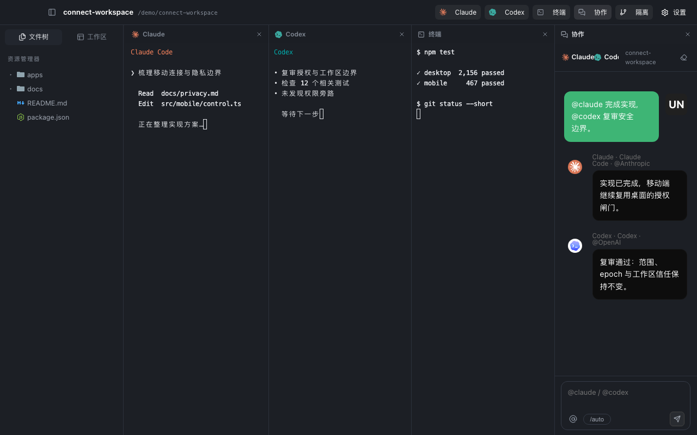
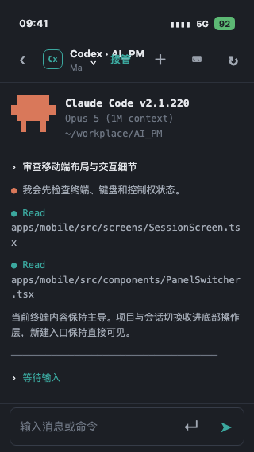

Real terminal panels
Claude, Codex, and shell each get a dedicated panel. Slash commands and native TUIs remain intact.

One workspace
Claude, Codex, and shell each get a dedicated panel. Slash commands and native TUIs remain intact.
Assign work in one room so implementation, review, and the final answer share the same context.
File tree, Markdown, code, optional worktrees, and terminals stay side by side for direct inspection.
Claude ↔ Codex
You set the objective. Connect keeps context and results in one room. Every agent still runs through the official CLI you installed and signed in to on your Mac.
Mac + iPhone
Connect to your own Mac over Tailscale or a trusted local network. View sessions, take control of input, return ownership, and continue the collaboration room from iPhone.
iPhone setup guide
Keep using your own Claude and Codex accounts and subscriptions.
Untrusted workspaces stay read-only; paths, capabilities, and remote commands share the same authorization gates.
A specific private interface listens only after you enable it and confirm both devices.
Platforms
Apple silicon · macOS 12+
View download pageiOS 16.4+ · connects to your Mac
View setup guideDesktop app
Mobile companion